66.76s → 99.98s · blocks 112–164 · frames from out/echallan-act3.mp4, not a mock-up
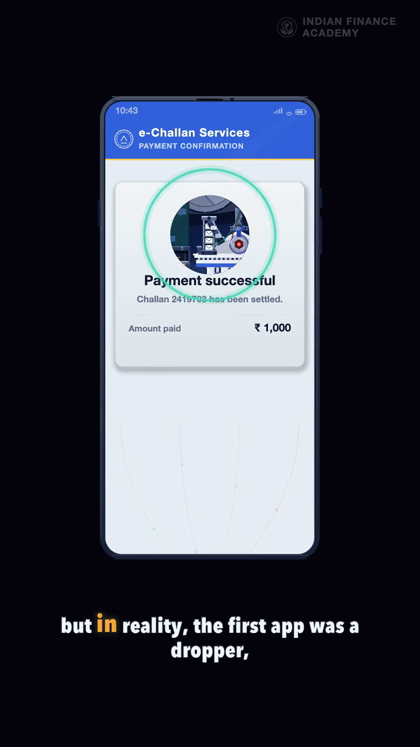
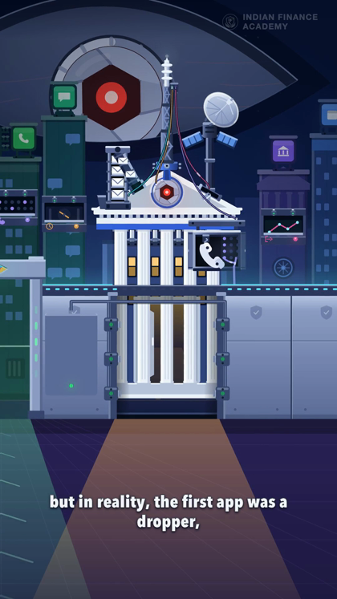
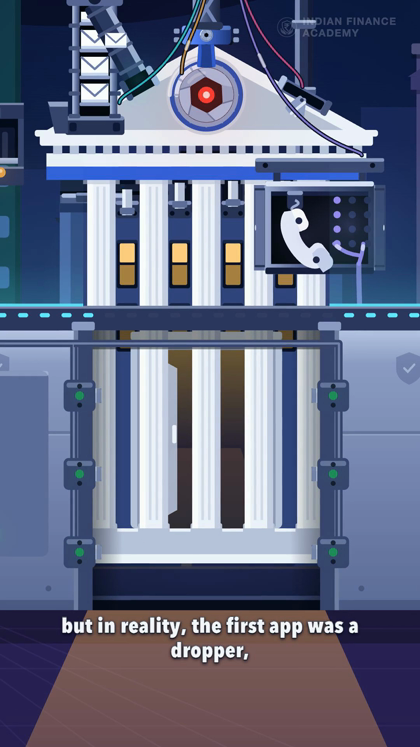
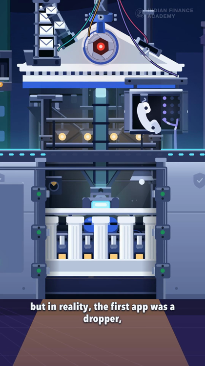
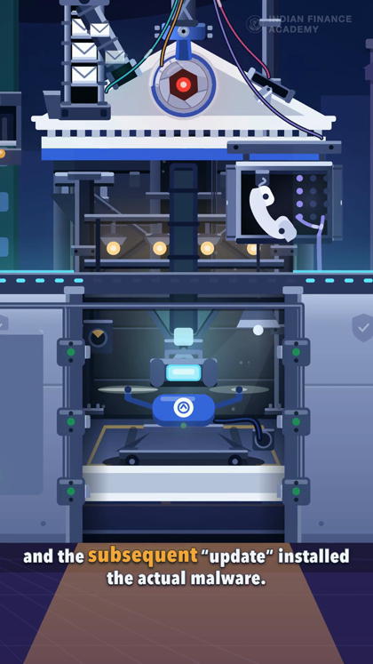
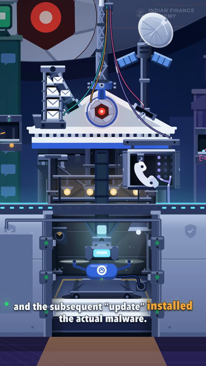
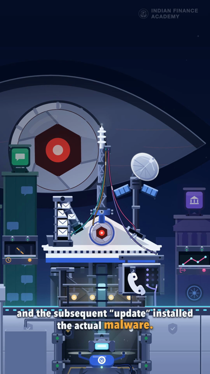
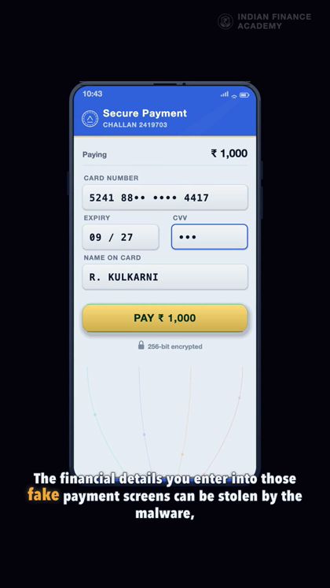
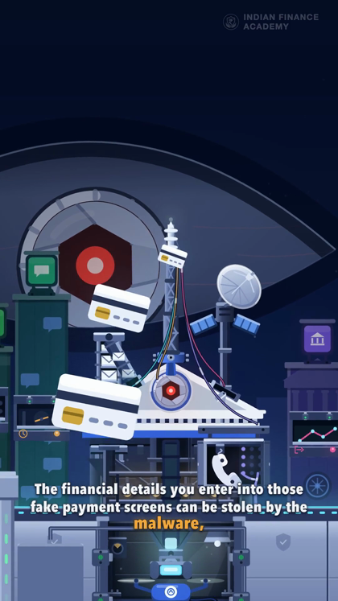
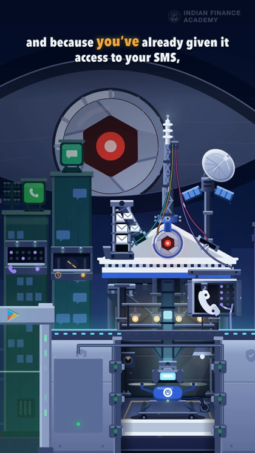
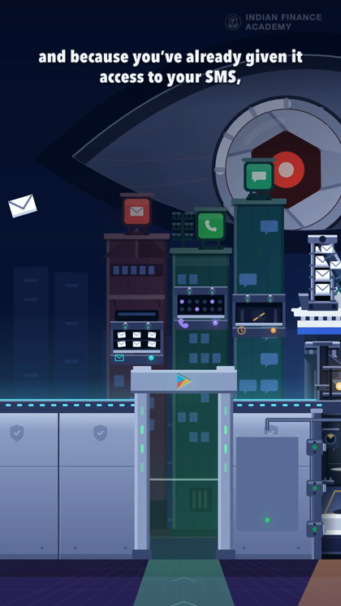
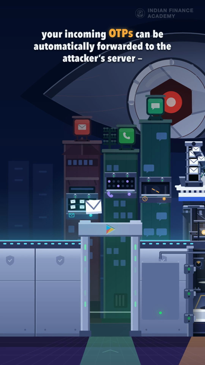
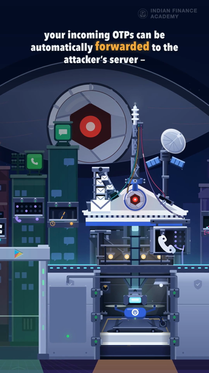
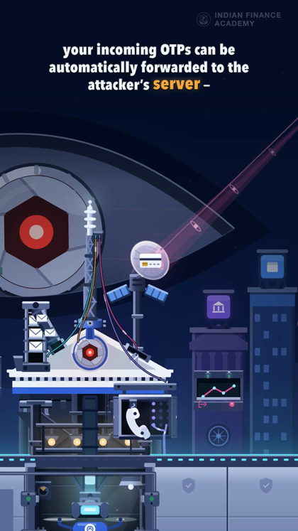
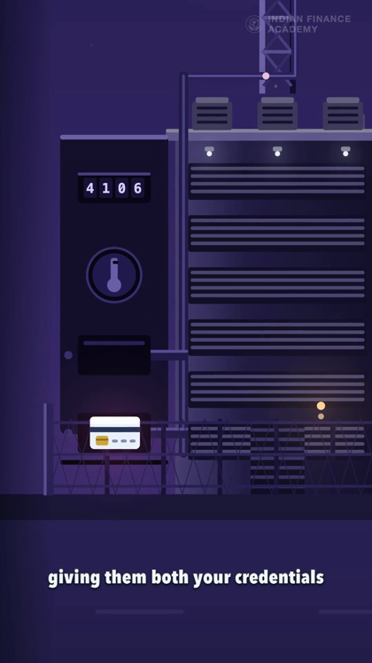
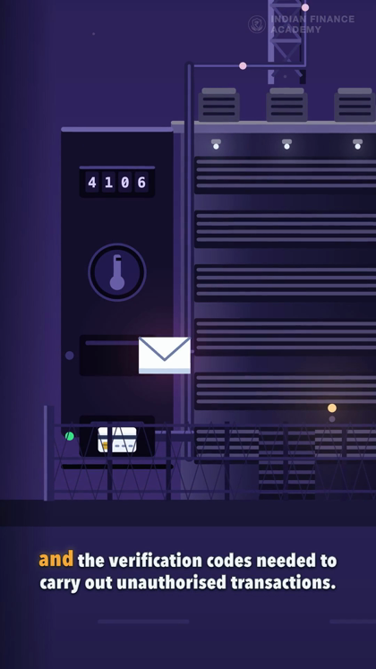
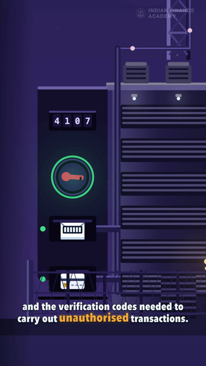
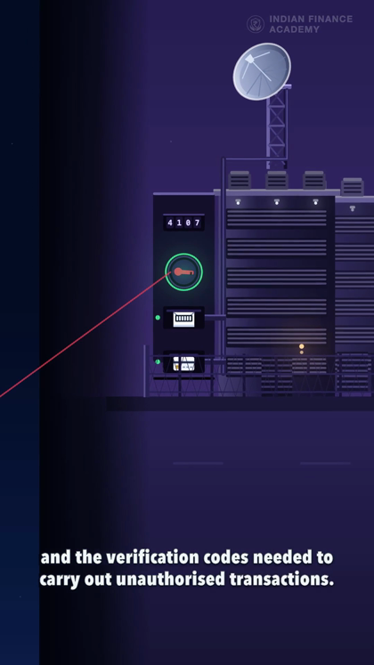
| gate | result |
|---|---|
| qa.mjs | 6 032 frames · 100.59s · blank 0 · 0 cut-like seams · frozen 0.25s · type in the UI band 17/6032 |
| act3.mjs | the two grounds never share a frame · the office holds 0.67s, the sink 0.73s, the hollow 0.85s, the apparatus 1.55s · all five stolen objects arrive · the front drops 464 of its 454 units · the ray misses its bowl by 1 unit |
| score-opening.mjs | 267 SFX · −14.0 LUFS · voice clears the bed by median 24.3 dB |
B(i) is BEATS[i] and BEATS is zero-indexed — B(111) is the 112th block.